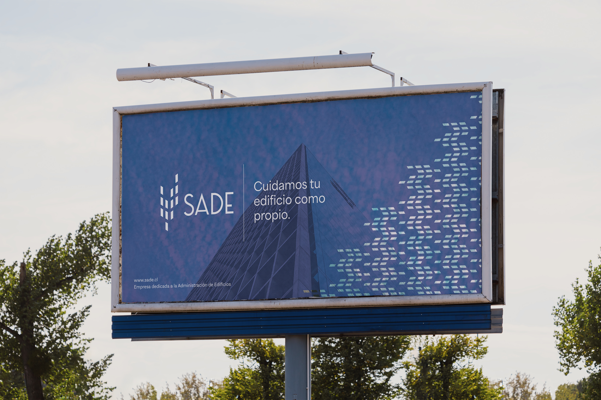
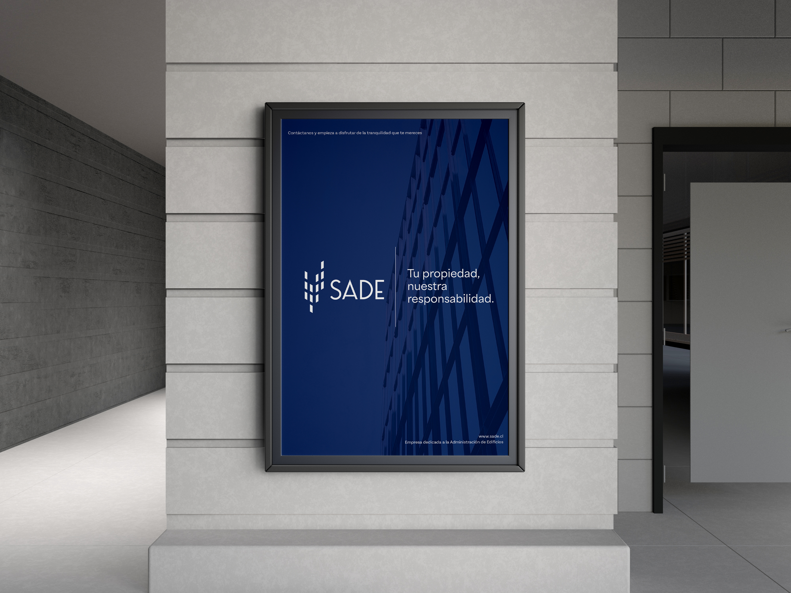
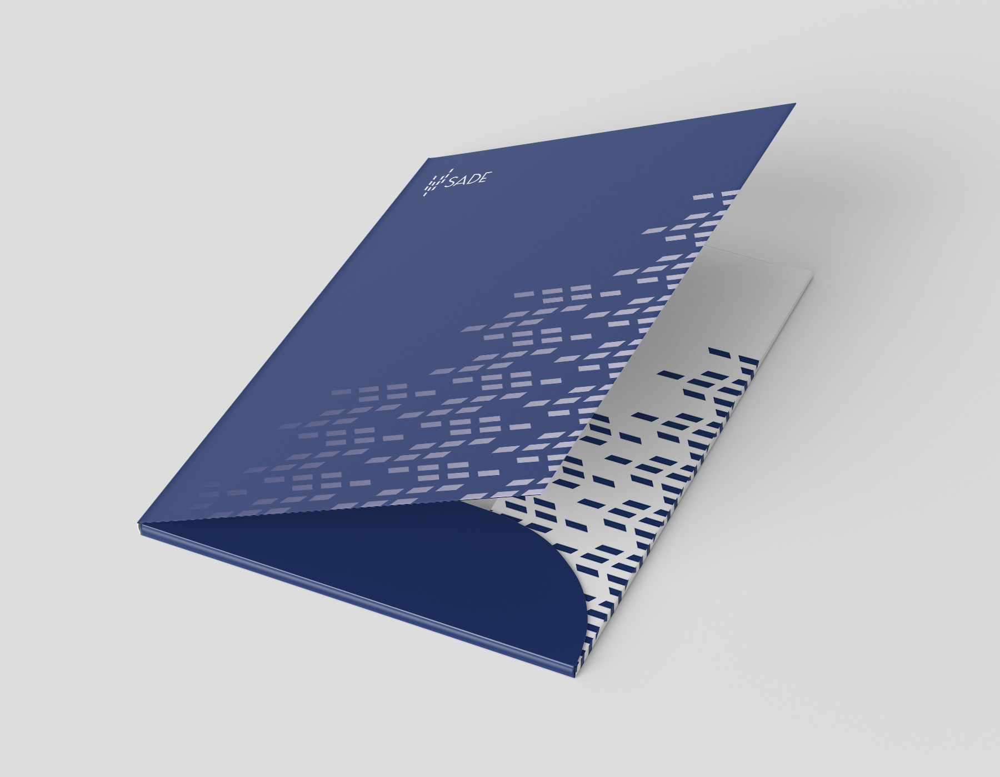

RebrandingSADE
Descripción del encargo
El encargo consistía en seleccionar una identidad visual existente y desarrollar un rebranding desde cero. Elegí SADE, una empresa dedicada a la administración de propiedades, con el objetivo de analizar su identidad actual, comprender a su público y construir una imagen más coherente con sus necesidades y posicionamiento.
Descripción de la propuesta
La propuesta busca proyectar una marca orientada a un público exigente, que valora la eficiencia, la precisión y la calidad en el servicio. Para ello, desarrollé un sistema visual basado en la simplificación de formas arquitectónicas, una estética limpia y sofisticada, y un lenguaje de comunicación directo y formal. El resultado busca posicionar a SADE como una marca profesional, moderna y confiable.

